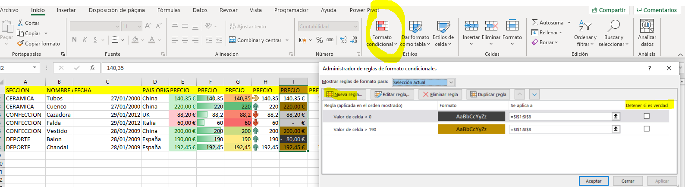

EXCEL - Formato Condicional
//FORMATO CONDICIONAL (ver filtros también)
Inicio > EStilos > Formato Condicional
Seleccionar rango y luego reglas para resaltar celdas (menor que, mayor que, igual)
10 Reglas para valores superiores e inferiores, puedes poner más
Barras de datos
Escalas de color
Conjuntos de iconos: Se pueden editar las reglas con los calculos que deseemos
Administrar reglas: Se aplican en cascada de arriba a abajo. Poner detener si es verdad
